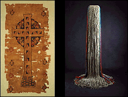

The Minneapolis Institute of Arts
Main Menu ~ Permanent Collection List ~ Interactive Museum Maps ~ Back ~ Next
Textiles
 (c) 34k
The Institute's 5,000 textiles reflect the artistic traditions of many diverse cultures, time periods, and geographical areas, from 5th century
Coptic Egypt to late 20th century Africa, America, and Europe. Textiles are included in some special exhibitions as well as permanent galleries.